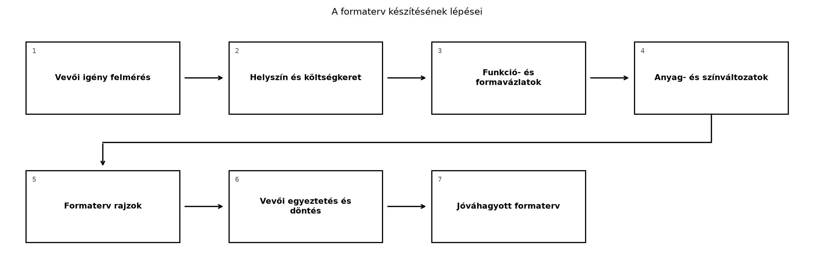

A vevő gyakran úgy érkezik a műhelybe, hogy „láttam egy képet, nagyjából ilyet szeretnék, de kicsit keskenyebb legyen, és lehetőleg világosabb”. Ha ilyenkor azonnal anyagot rendelünk és fűrészelni kezdünk, a végén szinte biztos a félreértés: más a méret, más a szín, más a fiókelrendezés, mint amit a vevő elképzelt. Ezt a kockázatot csökkenti a formatervezés. A formaterv nem fölösleges rajzolgatás, hanem a megrendelő és az asztalos közös nyelve: rögzíti, hogy mit készítünk, mielőtt drága anyagot vágunk. Ebben az alfejezetben megtanulod, hogyan kell vevői igényt felmérni, arányos, esztétikus bútort tervezni, és hogyan kell olyan formatervet készíteni, amely a későbbi műszaki dokumentáció és a vizsgaremek alapja.
Képzelj el egy keskeny előszobát, ahová a megrendelő cipőtároló szekrényt szeretne. A fal mellett 820 mm széles hely van, a belmagasság 2500 mm, a villanykapcsoló közepe 1300 mm magasan található. A vevő azt mondja: „legyen kicsi, keskeny, meleg hangulatú”. Ha most rajzolunk két-három vázlatot – az egyik tömör, magas ajtós, a másik alacsony, ferde homloklapos, a harmadik ülőkével kombinált –, a vevő azonnal látja, melyik illik az előszobához. A formaterv ezeket a vázlatokat teszi rendezetté, méretezetté és eldönthetővé.
Definíció. A formatervezés olyan tervezői tevékenység, amely a bútor funkciójából, a rendelkezésre álló helyből, az anyagból, a gyárthatóságból és a vevő ízléséből kiindulva alakítja ki a tárgy formáját, arányait, színeit és felületét. A formaterv a formatervezés eredménye: döntési és bemutatási célú rajz, amely nézetekben és szemléltető ábrán mutatja a bútort, feltünteti a fő méreteket, az anyagokat, a színeket és a felületkezelést. A formaterv még nem gyártási rajz, nem tartalmaz minden csomópontot és tűrést; azt a műszaki dokumentáció készítésekor dolgozzuk ki.
Szabály. A formatervezés négy pillére: funkció (mire való, ki használja, hogyan), forma (milyen arányú, milyen tömegű, milyen irányú), szerkezet (miből áll össze, hogyan gyártható, szerelhető), és anyag (fa, lap, vasalat, felület). A jó bútorban ez a négy pillér egységben van: a forma nem díszíti túl a szerkezetet, az anyag nem harcol a funkcióval. Például egy gyerekszobai játékdoboz legyen stabil, lekerekített élű, könnyen nyitható, ugyanakkor a színe és a fogantyúja is a gyerek léptékéhez igazodjon.
A formatervezés egyik legfontosabb eszköze az arány. Az arány azt mondja meg, hogyan viszonyulnak egymáshoz a részméretek: a front magassága a szélességhez, az egyik fiók magassága a másikéhoz, a lábak a testhez. Ha minden elem egyforma, a bútor unalmas; ha minden elem véletlenszerű, nyugtalan.
Definíció. Az aranymetszés (φ) olyan osztási arány, amelynél a kisebb rész úgy aránylik a nagyobbhoz, mint a nagyobb az egészhez. Az arány értéke:
A gyakorlatban a teljes méret körülbelül 38,2 % és 61,8 % arányban oszlik meg. Ez az emberi szemnek általában harmonikus, ezért a bútorfrontok, ajtómezők, fiók- és lábazati osztások tervezésekor gyakran használják. Ha a teljes magasság például 600 mm, a nagyobb mező kb. 371 mm, a kisebb kb. 229 mm.
Definíció. A ritmus azonos vagy hasonló elemek szabályos ismétlődése a bútoron: például három fiók egymás alatt, egyre növekvő magassággal; vagy egy polcsor, amelyben a nyílások azonos távolságra ismétlődnek. A szimmetria a forma tükörképszerű egyensúlya: az elölnézet bal és jobb oldala azonos felépítésű. A szimmetria nyugodt, ünnepélyes hatást ad; az aszimmetria feszültséget, mozgalmasságot vihet a formába, de nehezebb jól eltalálni.
Példa. Egy 900 mm magas komód frontját úgy osztjuk, hogy a felső, fiókos sáv legyen a nagyobb mező, az alsó, ajtós sáv a kisebb. Ekkor a nagyobb mező magassága hozzávetőleg 900 × 0,618 = 556 mm, a kisebb 900 − 556 = 344 mm. A két rész aránya 556 : 344 = 1,616, ami gyakorlatilag az aranymetszés.
1. feladat – Aranymetszés szerinti frontosztás. Adott egy 1200 mm teljes magasságú gardróbszekrény-elölnézet. Két nagy vízszintes osztást tervezünk: alsó tárolóajtós mező, felső polcos mező. Számítsd ki az aranymetszés szerinti mezőmagasságokat.
Megoldás. A nagyobb rész a teljes méret 61,8 %-a, a kisebb 38,2 %-a:
Ellenőrzés: 742 / 458 = 1,620, ami a φ értékéhez közeli, tehát az osztás elfogadható. A gyakorlatban természetesen a kerekítés és a vasalatok miatt az arány tájékoztató érték, nem szabad századmilliméterre erőltetni.
2. feladat – Méretarány a formaterven. A vevői formatervet M 1:10 méretarányban rajzoljuk. A bútor valós szélessége 820 mm. Mekkora méretet kell a rajzon mérnünk?
Megoldás. A rajzi méret = valós méret / méretarány második tagja:
Ha a rajzon egy oldalnézet mélységét 35 mm-re mérjük, akkor a valós mélység 35 mm × 10 = 350 mm. A formaterven a fő méreteket azonban mindig ki is írjuk, mert a rajz kinyomtatva torzulhat.
A formaterv akkor lesz használható, ha előtte pontosan felmértük a vevő igényét. A felmérés három részből áll: beszélgetés és kérdőív, helyszíni szemle és mérés, valamint költségkeret rögzítése.
A kérdőív célja, hogy a megrendelő szavait tervezhető adatokká alakítsuk. Kérdezzünk rá:
A helyszíni szemle során mindig mérjünk magunk is, ne csak a vevő adataira hagyatkozzunk. Mérjük meg a fal hosszát, a szoba magasságát, a nyílászárók helyét, a konnektorok, kapcsolók, radiátorok, fűtéscsövek helyét. Ellenőrizzük, hogy a kész bútor befér-e a bejárati ajtón, a lépcsőházon és a liftbe. Készítsünk fényképet és egyszerű felmérési vázlatot.
A költségkeret nem kínos téma: a vevőnek is érdeke, hogy ne tervezzünk megvalósíthatatlan megoldást, nekünk pedig az, hogy ne pazaroljunk időt olyan tervre, amelyet nem tud megfizetni. A keretet tartományban rögzítsük, és mondjuk el, hogy az anyag- és felületválasztás hogyan hat az árra. A pontos árat majd az árajánlatban számoljuk ki.
A formaterv egy döntési dokumentum. A vevő ebből érti meg a bútor formáját, ezért egyszerre kell pontosnak és jól áttekinthetőnek lennie. A formaterv tipikus tartalma:
A vetületi és axonometricus ábrázolás szabályait a Axonometrikus és perspektivikus ábrázolás alfejezetben már áttekintettük. A formaterven nem kell tűréseket, csomóponti rajzot vagy fűrészáru-listát feltüntetni; ezek a műszaki dokumentáció részei.
Szabvány. A rajz vonalfajtáira, méretmegadására és méretarányaira a rajzi szabványok vonatkoznak (MSZ EN ISO 128, MSZ EN ISO 5456 sorozat – az aktuális kiadás és jelzet ellenőrizendő). A bútor formaterven a méretet milliméterben adjuk meg, a mértékegységet a rajzon nem írjuk ki a méretszám után.
Továbbvitt eredmény. A jóváhagyott formaterv lesz a kiindulópontja a Szabásjegyzék és anyagnorma és a műszaki rajzok elkészítésének, valamint a Vizsgaremek és gyakorlati vizsgafeladat: tervezés, dokumentáció, értékelés alfejezetben készítendő vizsgaremek-dokumentációnak. A formaterven rögzített forma-, anyag- és színválasztás a későbbi árkalkuláció alapja is.
Vegyünk egy konkrét példát: előszobai cipősszekrény formaterv. A rajzon a bútor elölnézete, oldalnézete, felülnézete és 45°-os frontális axonometricus látványképe szerepel, M 1:10 méretarányban.
Az ábra a formaterv mintalapja: a négy kép E vetületi rendben áll (az oldalnézet az elölnézettől jobbra, a felülnézet alatta), a fronton szaggatott vonal jelöli az aranymetszés szerinti osztást, a jobb oldalon az anyag- és színdoboz, valamint a feliratmező látható. Az interaktív változatban a méretek, az anyagjelölés és a segédvonalak ki-be kapcsolhatók, és a V1–V3 változat vázlata is megnézhető.
Ritkán elég egyetlen formaterv. A vevő akkor tud igazán dönteni, ha két-három változatot lát. A változatok ne csak színben térjenek el, hanem formai vagy funkcionális megoldásban is. Például a cipősszekrénynél:
A változatokat egységes léptékben, azonos nézetben rajzoljuk, hogy a vevő összehasonlíthassa. Minden változathoz rövid szöveget írunk, amelyben feltüntetjük az anyagot, a felületet, a fő méreteket, a nyitási módot és a becsült árszintet. A döntés során a vevő nemcsak a képet nézi, hanem a funkciót is: be tud-e férni a cipő, kényelmes-e az ülés, elfér-e a kapcsoló.
A formaterv átadása nem egyszerűen egy rajz odaadása. Az átadás azt jelenti, hogy a vevővel közösen végignézzük a rajzot, és megbeszélünk minden méretet, anyagot, színt és felületet. A rajzon jelöljük, hogy a vevő melyik változatot választotta, és kérjünk írásos jóváhagyást (aláírás, e-mail visszaigazolás). A jóváhagyott formatervhez csatoljunk anyag- és színmintát: furnérminta, lakkpróba, fóliaminta. A színmintán szerepeljen a termék neve, a gyártó, a színkód – így később nincs vita arról, hogy „más lett a fehér”. A formatervet digitálisan és nyomtatott formában is adjuk át, és őrizzük meg a többi szerződéses dokumentummal együtt.
Figyelem. A formaterv a tervező szellemi alkotása, ezért szerzői jogi védelem alatt állhat (1999. évi LXXVI. törvény a szerzői jogról – ellenőrizendő a hatályos szöveg). A megrendelő a tervet a megrendelt bútor elkészítéséhez használhatja fel, de önkényesen nem másolhatja, nem adhatja át más asztalosnak a tervező engedélye nélkül. A tervező etikailag nem másolhatja le egy másik asztalos formatervét, és nem használhat fel védett dizájnt engedély nélkül. Egy bútor külső megjelenése formatervezési mintaoltalom alatt is állhat (a formatervezési minták oltalmáról szóló 2001. évi XLVIII. törvény; uniós formatervezési minta – ellenőrizendő: hatályos szöveg); ilyen terméket engedély nélkül nem szabad gyártani. Ha a vevő saját képet hoz, tisztázni kell, hogy milyen jogon használhatjuk fel.
Adott. Megrendelő: Kiss Katalin, társasházi lakás előszobája. Hely: fal melletti szabad szélesség 820 mm, a padlótól a kapcsoló közepéig 1300 mm. Igény: keskeny cipőtároló ülőkével. A vevő a V2 változatot választja: 800 mm széles, 350 mm mély szekrény; a bal oldalon 420 mm magas, fiókos ülőrész párnával (ülőmagasság a párnával kb. 450 mm), a jobb oldalon 1100 mm magas nyitott polcos rész, amely a kapcsoló alatt végződik, így a kapcsoló szabadon marad.
Formaterv. A rajz tartalma az előző rajzleírás szerint, de az elölnézet két részre oszlik: a bal (400 mm széles) ülőrész 420 mm magas, két fiókkal; a jobb (400 mm széles) rész 1100 mm magas, nyitott, polcos, a hátfal fehér. Anyag: test 18 mm MDF, fehér fóliázott, fiókfront tölgy furnér, natúr lakk; az ülőpárna szürke textil, levehető. Fő méretek: 800 × 350 × 1100 mm. A bal oldali ülőrész: lábazat 100 mm, fölötte két fiókfront 157 mm magasan, 2 mm hézaggal (100 + 2 × 157 + 3 × 2 = 420 mm). Ellenőrzés: a magas rész teteje (1100 mm) a kapcsoló alsó széle (kb. 1260 mm) alatt van, a kapcsoló szabad.
Szín- és anyagjelölés. A rajzon a test fehér síkfelületét üresen hagyjuk, a fiókfrontokat függőleges faerezetű sraffozással, a párnát pontozott textiljelel jelöljük. A színterv külön dobozban: test RAL 9010 fehér, fiókfront natúr tölgy, párna világosszürke, fogantyú króm.
Vevői döntés. A vevő a rajzot kézhez kapja, a színmintát jóváhagyja. A formatervre ráírjuk: „Jóváhagyott formaterv – Kiss Katalin, 2025. …; a gyártás ez alapján indul.” A későbbi szabásjegyzékben a testméret 800 × 350 × 1100 mm lesz, az ülőrész fiókfrontjai 2 db, egyenként 157 mm magasak.
recipe jellegű, számozott lépések:
Alább a formaterv készítés folyamatát mutatja az ábra:

Hiba: a műhely rögtön gyártani kezd, formaterv nélkül. Ok: idő- vagy pénzszűke, „majd telefonon megbeszéljük” hozzáállás. Következmény: a vevő más méretet vagy színt várt, a kész bútor nem illik a helyére. Helyes gyakorlat: mindig készüljön legalább egy egyszerű formaterv, nézetekkel, fő méretekkel és színmintával.
Hiba: a front minden eleme azonos méretű, nincs arányrend. Ok: a tervező nem gondolja át a formai hierarchiát. Következmény: a bútor unalmas, a vevő elégedetlen az összhatással. Helyes gyakorlat: alkalmazzunk aranymetszést, ritmust vagy tudatos szimmetriát; a nagyobb funkciójú elem általában nagyobb felületet is kapjon.
Hiba: a formatervről hiányzik az anyag- és színjelölés, csak a körvonalak szerepelnek. Ok: a tervező magától értetődőnek gondolja az anyagot. Következmény: a vevő a fehér fóliát natúr faanyagnak képzeli, vita a végén. Helyes gyakorlat: a formaterv mindig tartalmazzon anyag- és színtervet, mintadarabbal.
Hiba: a vevői igényfelmérésből kimarad a költségkeret. Ok: kényes témának tartjuk. Következmény: drága terv készül, amelyet a vevő nem tud kifizetni, az idő elvész. Helyes gyakorlat: őszintén rögzíteni a keretet a tervezés előtt.
Egy asztalos a következő esetet mesélte el. Egy megrendelő gardróbszekrényt kért, „fehér, magas, sok polccal”. A műhely készített egy formatervet három változattal: az egyik tolóajtós, a másik hagyományos nyíló ajtós, a harmadik félig nyitott, kosaras. A vevő a formaterv láttán jött rá, hogy a tolóajtós változat az előszobában a konnektor előtt állna, és a bal oldali fülke mélysége nem elég a vállfás rúdnak. A közös rajzolvasás során a tervet úgy módosították, hogy a rúd a jobb oldalra kerüljön, a tolóajtó balra nyíljon. Így a bútor a helyszínre pontosan illeszkedett, és nem kellett a kész szekrényt átépíteni. A tanulság: a formaterv nemcsak esztétikai döntés, hanem a helyszíni hibák kiszűrésének olcsó eszköze.
1. Igaz vagy hamis? A formaterv egyben gyártási rajz
is.
2. Mennyi az aranymetszés szerinti nagyobb rész 800 mm teljes
hossz esetén?
3. Mi hiányzik abból a formatervből, amely csak elölnézetet
tartalmaz?
4. Miért fontos a költségkeret rögzítése a tervezés
előtt?
5. Melyik arányrendszert használjuk, ha a frontot 0,382 : 0,618
arányban osztjuk?
6. A vevő hoz egy másik asztalos által rajzolt tervet, és
ugyanazt kéri tőlünk. Szabad-e lemásolni?
1. feladat (A) Határozd meg a formaterv fogalmát, és sorold fel legalább négy tartalmi elemét.
2. feladat (A) Számítsd ki az aranymetszés szerinti osztást 1000 mm teljes magasságnál. Mennyi a nagyobb és a kisebb rész?
3. feladat (B) Egy formaterv rajzán M 1:5 a méretarány. A rajzon a szekrény szélességét 160 mm-nek méred. Mekkora a valós szélesség?
4. feladat (B) Egy 600 mm magas fiókos frontot három vízszintes sávra osztunk. A magasságok számtani sorozatot alkotnak, a legkisebb 120 mm. Mennyi a második és a harmadik fiókmagasság?
5. feladat (C) Egy vevő szerint egy 700 mm magas komódfront „izgalmas” legyen, de ő mind a négy fiókot azonos magasságúra képzeli. Javasolj arányos osztást az aranymetszés vagy a ritmus alapján, és indokold röviden, miért jobb a megjelenés.
6. feladat (D) Készíts rövid formatervet egy fali kulcstartó polchoz: írd le a vevői igényt, a fő méreteket, a nézeteket (elöl-, oldal-, felülnézet, axonometricus), az anyagot, a színt és a felületet. A rajzot szövegesen írd le.
Önellenőrzés – válaszok
1. feladat
A formaterv a formatervezés eredménye: döntési és bemutatási célú rajz,
amely nézetekben és szemléltető ábrán mutatja a bútort. Tartalma
legalább: elölnézet, oldalnézet/felülnézet, axonometricus látvány, fő
méretek, anyag- és színjelölés, felületkezelés, méretarány, azonosító
adatok.
2. feladat
Nagyobb rész: 1000 mm × 0,618 = 618 mm. Kisebb rész: 1000 − 618 = 382
mm. Ellenőrzés: 618 : 382 = 1,618, tehát aranymetszés.
3. feladat
Valós szélesség = rajzi méret × 5 = 160 mm × 5 = 800 mm.
4. feladat
Három elem számtani sorozatban: a, a+d, a+2d. Összeg: 3a + 3d = 600 mm;
a = 120 mm, ezért 360 + 3d = 600, d = 80 mm. A magasságok: 120 mm, 200
mm, 280 mm.
5. feladat
Négy fiók fokozódó ritmussal, állandó 1,2-es szorzóval: 1 : 1,2 : 1,44 :
1,728. 700 mm front esetén
,
így a fiókfrontok kerekítve 130, 156, 188, 226 mm (összeg: 700 mm; az
utolsó tag a kerekítési maradékot veszi fel). Indoklás: a lefelé növekvő
fiók vizuálisan stabil, a nagyobb tárgyak alulra kerülnek, az
egyformaság pedig unalmas. (Hézagokkal a frontmagasságokból 3 × 3 mm-t
le kell vonni; ez a tervezési lépés része.)
6. feladat
Vevői igény: keskeny előszobafalra kulcstartó, apró tárgyaknak polc.
Méretek: szélesség 300 mm, magasság 180 mm, mélység 80 mm. Nézetek:
elölnézet 300 × 180 mm, felső 40 mm-es rejtett kampósorral; oldalnézet
80 mm mély, a hátlap 4 mm rétegelt; felülnézet 300 × 80 mm;
axonometricus: 45°-os frontális kép, a mélység 1:2 rövidítéssel. Anyag:
tölgy, natúr páccal; hátlap rétegelt lemez; kampók: sárgaréz. Felület:
natúr olaj. A rajz leírása: elölnézetben a polc vízszintes, a kampos sor
fölötte; anyagjelölés: faerezet sraffozással; méretarány M 1:2.
A formatervezés a bútor funkcióját, formáját, szerkezetét és anyagát egyesítő tervezői munka. A formaterv döntési és bemutatási célú rajz, amely nézetekben (elöl-, oldal-, felülnézet), axonometricus vagy perspektivikus látványban mutatja a terméket, feltünteti a fő méreteket, az anyagokat, a színeket és a felületet. A jó arányok eszköze az aranymetszés (nagyobb rész ≈ 61,8 %, kisebb ≈ 38,2 %), a ritmus (elemek szabályos ismétlődése) és a szimmetria. A tervezés előtt fel kell mérni a vevői igényt: funkció, helyszíni méretek, stílus, anyag, szín, költségkeret, határidő. A formatervből több változatot készítünk, a döntést írásban rögzítjük, és a formatervet anyag- és színmintákkal együtt adjuk át. A rajz nem gyártási dokumentáció, de alapja a későbbi műszaki rajzoknak, szabásjegyzéknek és kalkulációnak. Szerzői jogi és etikai szempontból más terveit nem másolhatjuk le engedély nélkül.
Továbbvitt eredmény. A jóváhagyott formatervet felhasználjuk a műszaki dokumentáció készítésekor – például a Szabásjegyzék és anyagnorma alfejezetben –, valamint a Vizsgaremek és gyakorlati vizsgafeladat: tervezés, dokumentáció, értékelés alfejezetben, ahol a vizsgaremek formatervét is ezen elvek szerint kell elkészíteni.
Felhasznált forrástípusok: magyar és európai rajzi szabványok (MSZ EN ISO 128, MSZ EN ISO 5456 sorozat – ellenőrizendő a pontos jelzet, kiadás és hatály); bútorformatervezési szakkönyvek; a hazai asztalos műhelygyakorlat. Ellenőrizendő adatok: az aranymetszés gyakorlati kerekítései (tájékoztató érték), a szerzői jogi törvény hivatkozása (1999. évi LXXVI. törvény – hatályos szöveg ellenőrizendő), valamint a példákban szereplő méretek és arányok (a tényleges bútornál a helyszíni méretek és a vevői igény dönt). A szín- és anyagjelölések a gyártó aktuális adatlapjával és mintáival véglegesítendők.